VM100으로 회전기계
로터 발란싱 측정
MMF VM100 진동분석기에는 발란싱 소프트웨어가 내장되어 있습니다. 별도 PC 없이 현장에서 바로 불균형을 측정하고, 보정 분동의 위치와 질량을 계산하며, CSV 보고서까지 출력할 수 있습니다.
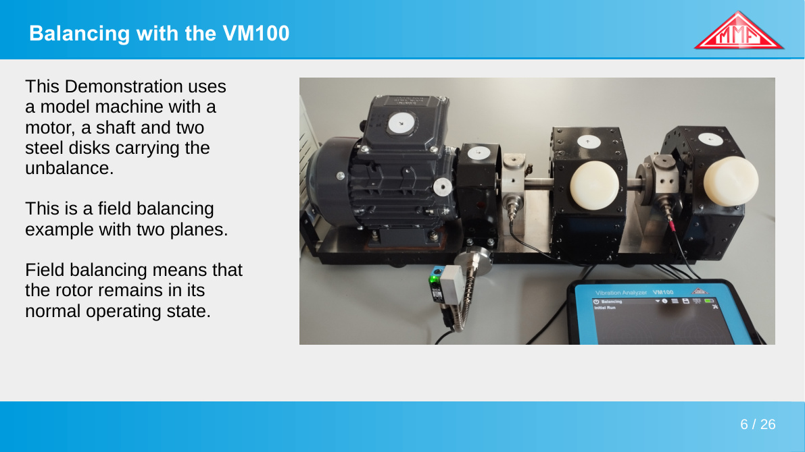
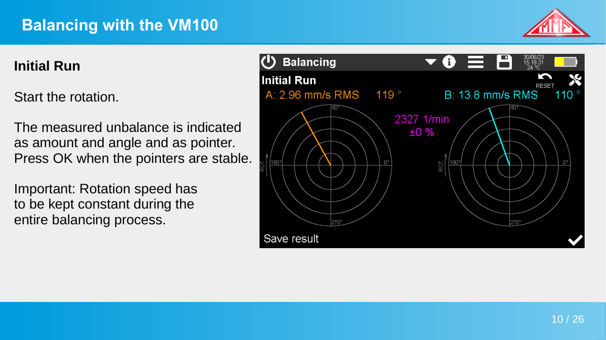
로터 불균형의 세 가지 형태
불균형 유형에 따라 1면 또는 2면 발란싱을 선택합니다
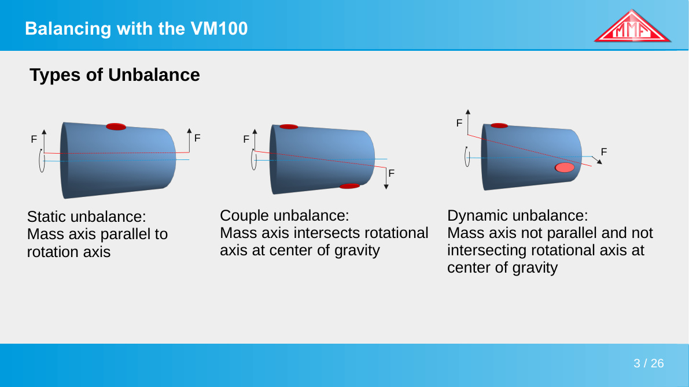
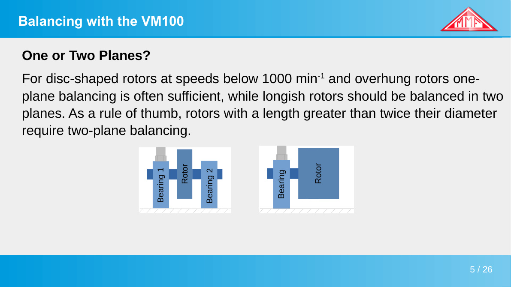
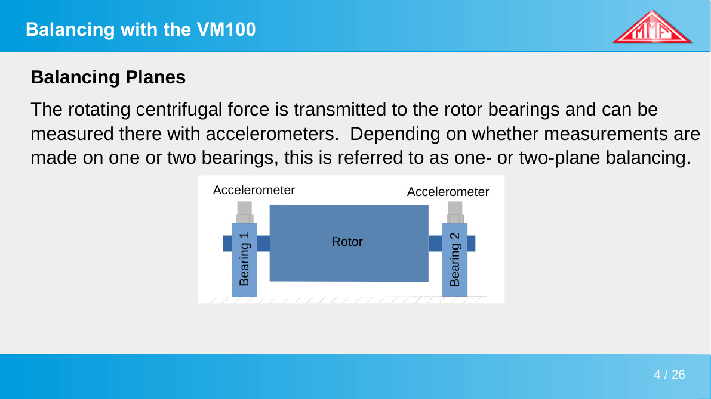
길이가 직경의 2배를 넘는 로터, 또는 1,000 RPM 이상으로 운전되는 긴 로터는 2면 발란싱이 필요합니다. VM100은 1면과 2면 발란싱 모드를 모두 지원하며, 모드 전환은 기기 내에서 바로 가능합니다.
센서 설치 — 가속도계 + 비접촉 RPM 센서
2면 발란싱 기준. 센서 3개로 측정 준비 완료
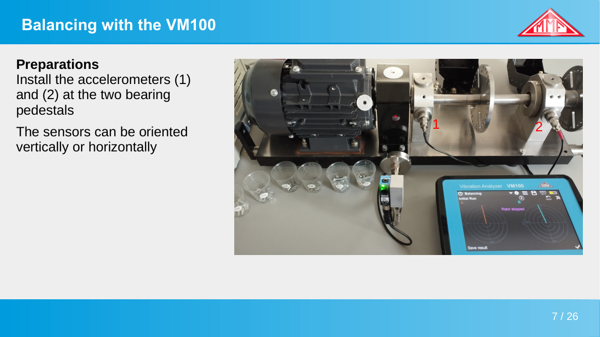
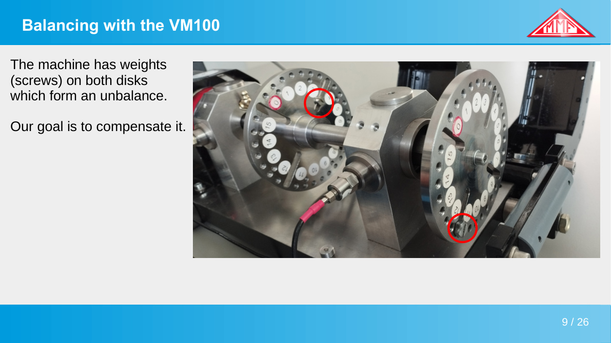
VM100 발란싱 화면
극좌표 표시, 보정값 자동 계산, 잔류 불균형 추가 제안까지 기기 내에서 처리
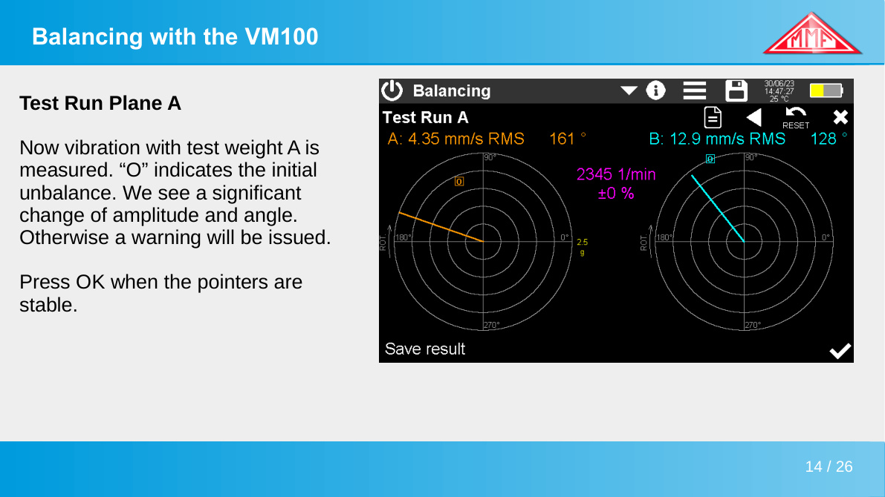
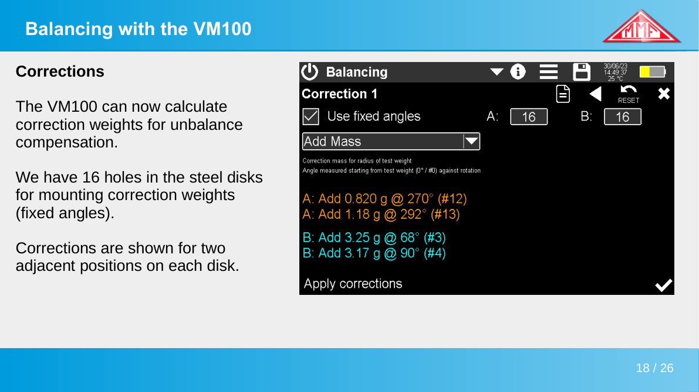
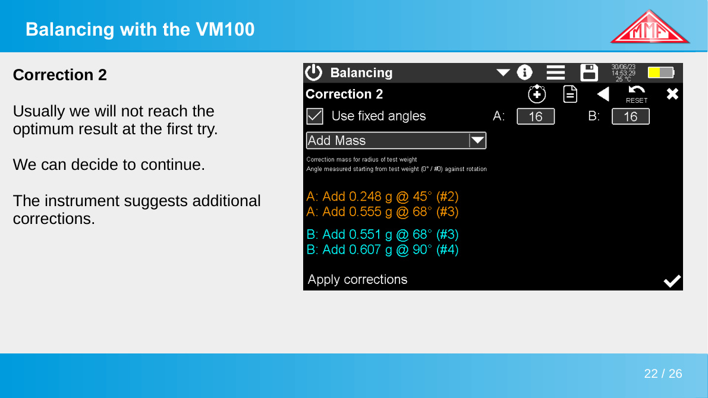
측정 결과 — 2회 보정 후
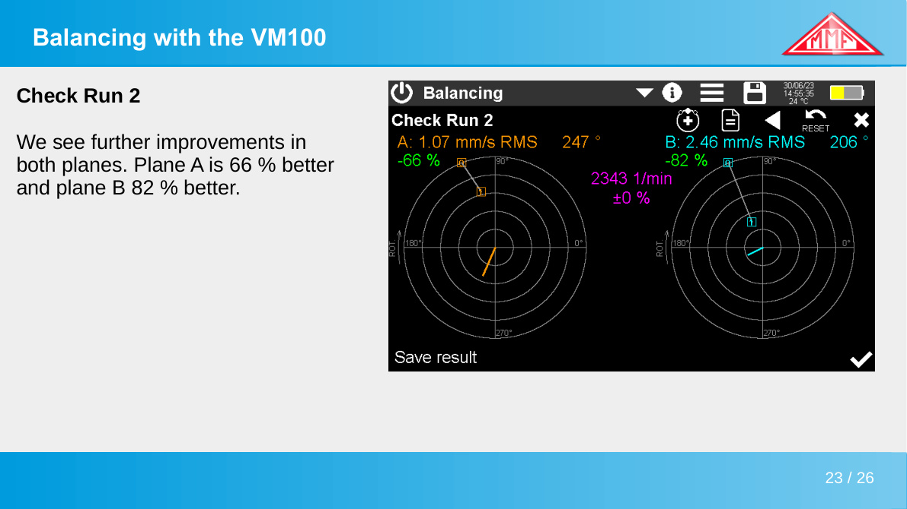
'저장' 버튼 하나로 전체 측정 이력과 보정 내역이 포함된 CSV 보고서가 생성됩니다. 납품 기록 또는 설비 이력 관리에 바로 활용할 수 있습니다.
VM100B-BAL 발란싱 키트
발란싱 소프트웨어 + 진동분석기 + 센서를 하나의 키트로
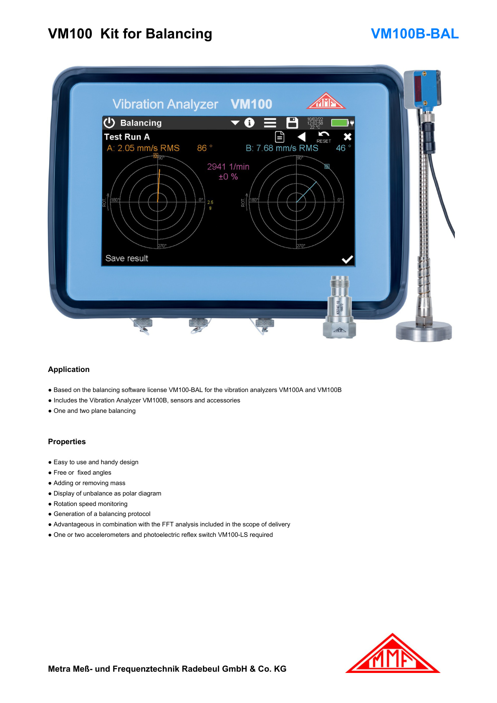
VM100B 진동분석기에 발란싱 소프트웨어 라이선스(VM100-BAL)와 측정에 필요한 센서·악세서리를 포함한 올인원 키트입니다. 현장에서 바로 꺼내 쓸 수 있도록 구성되어 있습니다.
- VM100B 진동분석기 (3채널)
- 가속도계 KS74C10 × 2 (케이블 5m 포함)
- 비접촉식 광전식 반사 스위치 VM100-LS
- 클램핑 마그네트 008 × 2
- 케이블 어댑터 3×BNC
- 1면·2면 발란싱 / 질량 추가·제거 방식 모두 지원
- 회전속도 범위: 100 ~ 60,000 min⁻¹
- 데이터 출력: CSV + 비트맵 스크린샷
VM100 발란싱 기능 상담 및 데모 요청
031-680-1225 · wgjeon@cndtec.co.kr